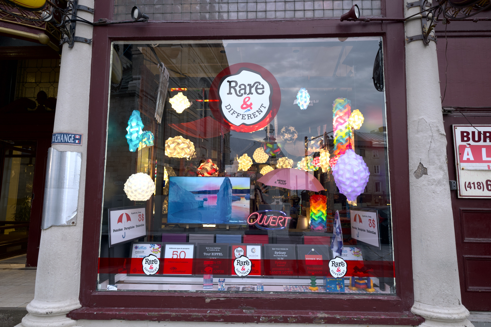
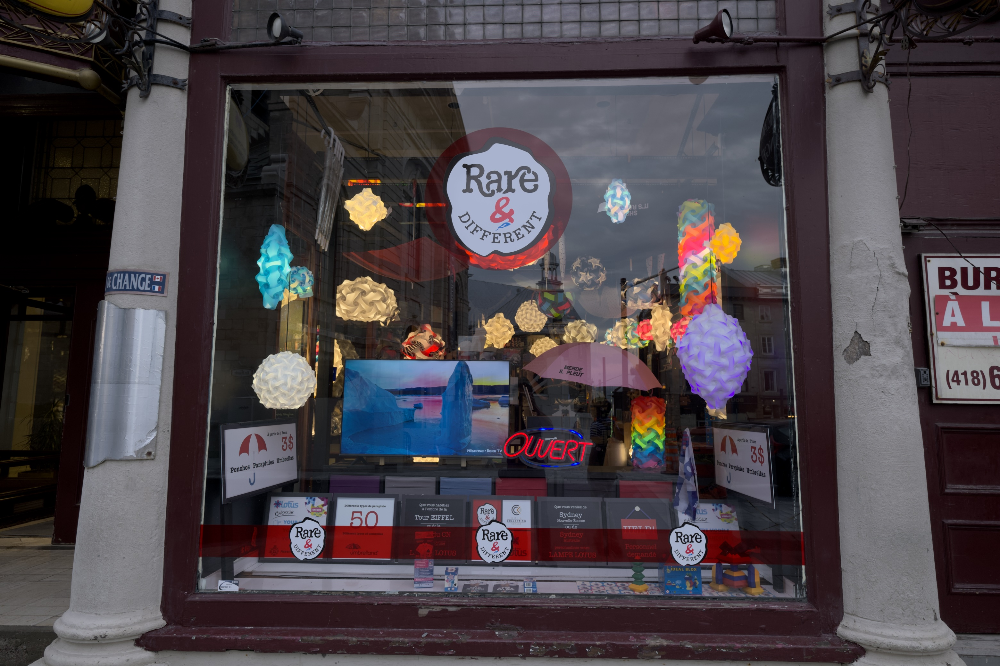
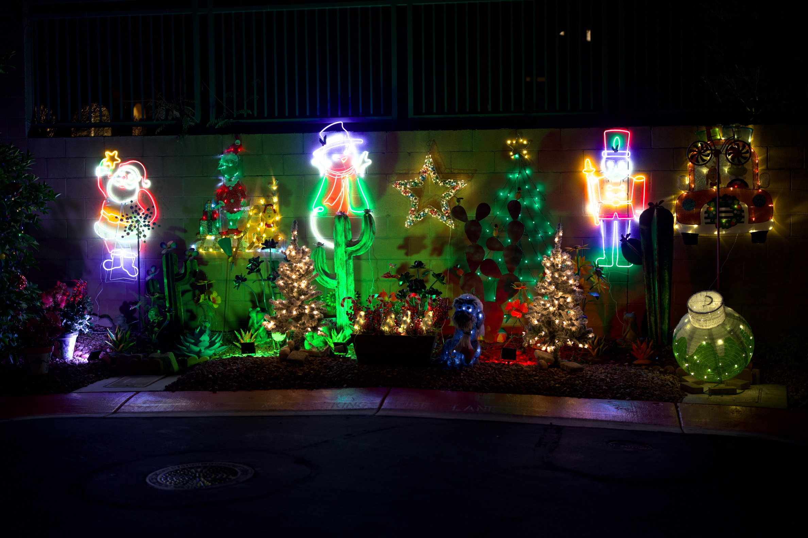
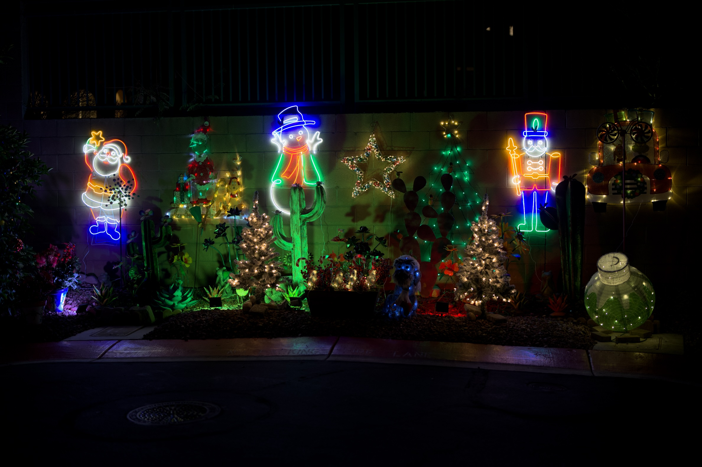

Your Exports Are Four Stops Behind Your Camera
Your camera records the highlights and your screen can show them, but the file in between still can't carry them.
TL;DR
- A typical RAW file holds as much as 4 stops of real detail above SDR white. Recovery has always reached it, but every SDR export rolls it off and files it back under paper white.
- The displays are already here: most phones and recent laptops are HDR. What's missing is a file format that carries the range.
- The fix exists: JPEG with a gain map (ISO 21496-1). The same file shows full HDR where it's supported and a normal, correct photograph everywhere else, so exporting it costs nothing.
- Where it displays as HDR today: any browser on iOS 26, desktop Chrome, Apple Photos and Messages, Instagram and Threads feed posts, Lightroom. Facebook and most upload pipelines still flatten to SDR.
- The last SDR link is the camera itself, with an SDR viewfinder, an SDR rear screen and no HDR file output. Cameras should write gain-map JPEG in-camera, as phones have done at burst rate for years.
If you shoot RAW seriously, you already work the top of the file. You expose to the right, protect the highlights and pull them back in the editor, which RAW converters have been able to do for twenty years.
You already know that headroom is there. This article is about what happens to it on the way out.
A typical RAW file holds as much as 4 stops of information above SDR white, with real color, detail and gradation in it. Recovery reconstructs it. An SDR export then rolls it off and files it under diffuse white, because a print or an SDR screen has nowhere brighter to put it. In the glint on water, the sun flaring off glass or the inside of a sunlit cloud, the detail survives the trip, but the brightness that made it a highlight does not.
We treat that roll-off as a fact of photography, but it comes from the output format we save into and the displays that format was designed for.
Why it never felt like a loss
The arrangement has an honest origin. For thirty years the output was SDR: a print, or a screen that could show roughly six stops. When the destination can't represent anything above diffuse white, there is nowhere to put the extra stops, so the whole imaging pipeline was built to discard them early and gracefully. Highlight roll-off, the gentle shoulder we all learned to love, is a compression strategy. It takes information you can't display and squeezes it into a range you can.
It was the right engineering decision at the time, and the constraint behind it has since gone away. The habit stayed. We still expose to protect highlights we could now keep, judge images on displays that can't show what we captured, and export to a format designed around a limitation our hardware no longer has.
The hardware already caught up
Every M-series MacBook Pro has an XDR display, and recent iPhones and iPads have HDR screens, so there's a good chance you're reading this on one. Most photographs are still exported as if those displays didn't exist.
What "true HDR" actually means
The term has meant three different things, and only one of them is what this article is about.
The first is the tone-mapped look of 2012, with the gray skies, haloed edges and crunchy local contrast that gave "HDR" its bad name. It was an attempt to cram high dynamic range into a low dynamic range file, and it looked like it.
The second is the exposure blend, where you merge brackets to recover a scene one frame couldn't hold.
True HDR is simpler and less dramatic. It delivers the scene's actual range to a display that can show it, without local contrast tricks: a highlight that was four stops brighter than white in the world is four stops brighter than white on your screen. The result looks normal, the way the scene looked.
See it for yourself
Not sure what your browser is doing? Test it here: three images and a table that explains the result.

SDR. A window full of lit lamps, a neon OUVERT sign and a glowing screen, and none of them reads as switched on. With nowhere above white to put a light source, a lamp that is genuinely emitting lands on the same value as the printed card beside it. Click for full size.

HDR. Same RAW file, same processing, exported as a gain-map JPEG. The lamps and the neon rise above white where they belong, and the window sorts itself back into things that emit light and things that merely reflect it. Click for full size.
Fujifilm X-H2S, XF 10-24mm F4 R OIS.
Night scenes make the point hardest, because almost everything worth seeing is a light source.

SDR. Look at the neon outlines of Santa, the snowman and the nutcracker. Where each tube is brightest it turns white, so the color drains out of the part that is doing the glowing. The string lights on the small trees run together into one pale mass. Click for full size.

HDR. The tubes hold their color the whole way through, and the string lights separate back into individual points, because they can sit above white instead of being pushed down onto it. Click for full size.
Sony A7R V, FE 50mm F1.2 GM. Photograph © David Redfearn.
That pair also says something about blooming. The soft white swelling around each light in the SDR version looks like sensor blooming: charge spilling out of a saturated photosite into its neighbors, the usual explanation for why night shots go mushy around the lights.
The HDR version shows that is not what happened here. The sensor recorded each light cleanly, with its falloff intact. Brightness drops away steeply around a neon tube or a filament, and in this frame the brightest points reach about ten times the level of white, so when everything above white is mapped onto white, a thin intense line becomes a fat pale one. Some genuine optical flare is in there too, and it survives in both versions. The spreading itself happens at export.
Neon at night is easy to dismiss as a special case, so the third pair is a daylight landscape with clouds. It runs into the same ceiling from the other direction. The lit face of a cloud, the snowfield beneath it and the haze between them are all brighter than paper white, so an SDR export files them at the same value, and the range collapses where the scene depends on it most.

SDR. A conventional export, carefully processed in DxO PhotoLab, and the ceiling still shows. The cloud bank sitting on the range and the snow beneath it converge on the same white, so the brightest third of the scene flattens into one value. Click for full size.

HDR. The same RAW file exported from ApolloOne as a gain-map JPEG. The sunlit cloud rises above white and reads as luminous again, the snow keeps its texture instead of merging into the cloud, and the depth between haze, cloud and snowfield comes back. Click for full size.
OM System OM-1, M.Zuiko Digital ED 12-45mm F4 Pro. Photograph © Shane Dias.
Those frames came off a Fujifilm, a Sony and an OM System body, and the brand makes no difference. The extra range is what the sensor recorded. It sits in the RAW file until an export format carries it, and every camera in this class has been capturing it for years.
"But you can't print it"
This is the strongest objection, and it's correct. You can't print an HDR image: ink on paper has a fixed contrast ratio.
Most photographs are seen on screens now, though. Sharing has moved to mobile, and most mobile devices have HDR displays, so the photograph you post is far more likely to be viewed on an OLED phone than on a print. For the medium most of your audience uses, HDR is the common case.
Shooting for HDR doesn't stop you making an SDR rendering for paper; that's one more export. Going the other way doesn't work: once you save an SDR JPEG, those four stops are gone for good.
Getting the bits to the viewer
Getting those highlights onto someone else's screen depends on the file format, and here the industry has partly gone the wrong way.
HEIF with an HLG transfer function, the route several manufacturers took, has two failure modes. Outside Apple's ecosystem the file often won't open at all. And on an SDR screen it looks wrong, washed out and flat, because the viewer doesn't know how to interpret the transfer function. That makes it a poor format for sharing.
JPEG with a gain map (standardized as ISO 21496-1) solves this. The file is an ordinary JPEG plus a small auxiliary image describing, per pixel, how much brighter the HDR rendering should be. An SDR viewer shows a normal photograph and ignores the gain map; an HDR viewer applies it and shows the full range. You export one file for both.
One catch: the gain map itself is standardized, but the signaling that tells a viewer to look for one isn't, yet. Apple writes its own marker and hangs the gain map's parameters off the auxiliary image. Google's Ultra HDR, which is what Chrome reads, expects a version tag and a container directory on the main image instead. Apple's software reads both conventions; Chrome currently reads only Google's.
So a gain-map JPEG written on a Mac can open as a flat SDR photograph in Chrome, on a display that could show the HDR version, with nothing on screen to say so. Chrome just wasn't told where to look. A file can carry both conventions at once, and then every current viewer handles it correctly, but the exporter has to write it that way. If you're choosing an exporter, ask whether it does.
HEIC with a gain map, the file an iPhone writes by default, looks like the obvious refinement: the same SDR-plus-gain-map idea in the container Apple already uses, at roughly half the size of the equivalent JPEG. The saving is real, and unlike HLG it uses the right HDR mechanism. Inside Apple's ecosystem it's an excellent format.
Outside it, HEIC has a reach problem. It is HEVC video compression inside a picture file, and HEVC comes with patent licensing that browser makers outside Apple have declined to pay for. Chrome and Firefox have never opened a HEIC and show no sign of starting, and a Windows machine needs a paid codec add-on before its own Photos app will open one. Safari renders it, gain map and all, and nothing else does, so most of the web treats a HEIC as a download rather than a photograph, whatever it saves in size. The cause is different from HLG's, but for sharing the result is the same.
JPEG XL is the best long-term answer for capture and archival: small files, full color depth, HDR throughout, and lossy like JPEG but at far higher quality per byte. It's the format RAW should eventually give way to. For delivery it isn't ready yet. Safari decodes it natively, but Chrome and Firefox still hide it behind a flag, so most of your audience can't see a JXL file at all.
Gain-map JPEG covers sharing today, and JPEG XL is the archival format to aim for later.
The apps haven't caught up with the browsers
The browsers have done their part. Since iOS 26 every browser on an iPhone renders gain-map HDR (they all share Apple's WebKit engine, so one engine change upgraded all of them at once), and desktop Chrome has done it since 2023. The apps that most photographs pass through are further behind.
The list of apps that show your photograph in HDR today is short: Apple's Photos and Messages, Instagram and Threads (in feed posts, not Stories, and only when the upload keeps its original aspect ratio), Google Photos and Lightroom. Facebook flattens photographs to SDR on upload, even though its HDR video gets through. The chat apps mostly lose the gain map when they compress: a default photo send in WhatsApp or Telegram re-encodes the image and the highlights go with it, although both deliver the file byte for byte if you send it as a document instead. Whether the app at the other end then displays the HDR is a separate question. Signal re-encodes on every path, by design. For X, TikTok, Reddit and a long tail of others nobody has published a test yet, and the open question there is whether the upload pipeline keeps the gain map. A mail attachment sent at actual size arrives intact, so the only question is whether the mail app shows the HDR; if it doesn't, the range is still in the file and saving it to Photos displays it. Cloud drives move the bytes untouched and leave it to the viewer at the far end.
The reason is how iOS works. It hands every app the SDR rendering by default, and showing the HDR takes a deliberate request that each developer has to make. That's why the web got there first: one engine change switched every browser at once, while each app has to opt in on its own.
None of this is a reason to wait. Wherever support is missing, a gain-map JPEG shows as an ordinary, correct photograph, and the same file shows HDR once support arrives. The plumbing is moving too: libvips, the image library inside many websites' upload pipelines, learned to carry gain maps through a resize in late 2025. Each service still has to turn that on (the gain map rides the same switch most pipelines use to strip location data), but the tooling is no longer the obstacle.
The camera is the last SDR link in the chain
Follow the dynamic range through a shoot today. Your eye sees a scene with enormous range, and the sensor captures most of it. Then you compose through an SDR electronic viewfinder, check the shot on an SDR rear screen and save it to a file format that discards the top four stops, before viewing it on a display that could have shown you all of it.
Every other link in that chain already handles HDR. Apple ships XDR displays on every MacBook Pro, plenty of third-party monitors do HDR, the operating systems support it, phones already shoot it, and the viewing and editing software exists.
Why this is in the manufacturers' interest
For camera makers the strongest argument is commercial.
Mirrorless bodies and sensors have become extraordinary. Autofocus and stabilization are excellent, and resolution and burst rates passed what most photographers need some time ago. That leaves anyone selling cameras with an awkward question: what is left to put on the box? The spec race that drove upgrades for a decade is largely over, and existing owners struggle to justify a new body.
HDR could be that answer. It gives a visibly different photograph on hardware customers already own, and it would make a real product generation:
- HDR electronic viewfinders — compose the scene with the range you are actually capturing, instead of a flattened preview of it.
- HDR rear LCDs — judge a shot in the field and see the real highlights instead of a clipped approximation.
- HDR file output — a file that carries the range home and displays correctly when it gets there.
That is a headline feature set. It would give a manufacturer something to show on a shop floor that a customer can see at a glance, which the current generation of bodies doesn't have.
What that means concretely
Now: write JPEG + gain map in-camera. The usual objection is pipeline cost: can a camera do this at burst rates? It can. A gain map is a ratio between the SDR and HDR renderings, quantized to 8 bits and downsampled, and it uses the JPEG encoder every camera already has instead of a new codec block. Phones have produced gain-map HDR stills at capture rate for years, on a fraction of the silicon a flagship camera carries, so a camera with a dedicated image processor can do it too.
Next: HDR EVFs and rear screens. This is real hardware at real cost, and it's also the part that sells bodies. Shooting HDR through an SDR viewfinder is like mixing a record on headphones that can't reproduce bass: you can do it, but you're working blind in the region you are trying to control.
Sony has come furthest here, and the A7R VI gets a lot right. It is the first camera with an HDR-capable viewfinder (10-bit HLG, DCI-P3, roughly three times brighter than its predecessor), and it captures HDR stills. That's the right direction, and it makes the rest of the industry's position harder to defend.
It also stops halfway. The viewfinder shows high dynamic range, but the histogram beside it still measures SDR, so you can see the highlight range but can't measure it. And the file it writes is HEIF with the HLG curve, the format that won't open reliably off an Apple device and looks washed out on SDR screens.
The histogram gap isn't a hardware limitation. The panel already renders high dynamic range, so teaching the histogram to measure it is a firmware change, and it may be the most useful HDR feature Sony could ship next.
The A7R VI is a good camera, and its gaps show where the opportunity is: metering that matches the viewfinder, and an output format that survives the trip to someone else's screen.
Later: JPEG XL as the archival format. Here the engineering objection is real. Software JXL encoding is slow, and doing it at capture rate probably needs dedicated hardware, so it will take a product cycle or three. It's still the right destination: small files, full color depth and HDR throughout, in the role RAW occupies now.
The near-term request is the modest one: the data is already in the file and the JPEG encoder is already in the camera, so gain-map JPEG output is mostly a firmware change.
For the better part of a decade, "HDR" in photography meant a garish, over-processed look, because that was the only way to hint at high dynamic range inside a low dynamic range file. That constraint is gone and the displays are on desks and in pockets, so photographs no longer need to stop at SDR white.
What you can do today
You don't have to wait for any of this to see what your own files contain.
ApolloOne renders your RAW files in HDR on screen, with the highlights as the sensor recorded them. Open a file you shot last year and look at the highlights.
For sharing, it exports gain-map JPEG with both signaling conventions, Apple's and Google's Ultra HDR, so the same file opens as HDR in both Chrome and Safari and as an ordinary, correct photograph everywhere else. It also exports full HDR to AVIF and JPEG XL in PQ, and HEIC if you want the ISO gain map in Apple's own container.
Camera RawX brings HDR previews to Quick Look for RAW files macOS can't open on its own, and ApolloOne GO puts the same HDR rendering on an iPad or iPhone, so you can judge the real range of a shot in the field on the kind of display you'll probably share it on.
Every HDR image on this page was exported from ApolloOne 4.7.0 as a gain-map JPEG, so you saw them in HDR if your screen supports it and as ordinary photographs if it doesn't.